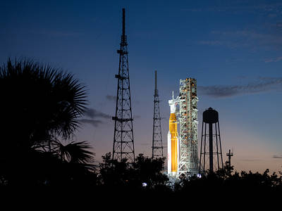
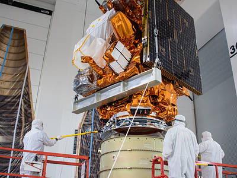
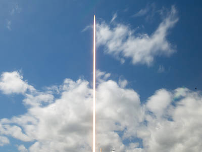

Nasa posts an Image of the Day page every day. Here are 3 of my favourite images:
-
Artemis I Glows After Sunset
 According to NASA, Artemis I is the first integrated test of our deep space exploration systems: the Orion spacecraft, SLS rocket, and supporting ground systems. Launch of the uncrewed flight test is targeted for Nov. 14 at 12:07 a.m. EST
-
JPSS-2 Stacked Atop LOFTID Spacecraft
 According to NASA, JPSS-2 and LOFTID together measure approximately 27 feet tall. Launch is targeted for Nov. 1 from Vandenberg. NASA's Launch Services Program, based at the agency's Kennedy Space Center in Florida, is managing the launch.
-
NASA's SpaceX Crew-5
 According to NASA, In this 20-second exposure from Oct. 5, 2022, a SpaceX Falcon 9 rocket carrying the company's Crew Dragon spacecraft is launched on NASA's SpaceX Crew-5 mission from our Kennedy Space Center in Florida to the International Space Station (ISS). This is the fifth crew rotation mission of the SpaceX Crew Dragon spacecraft and Falcon 9 rocket to the ISS as part of the agency's Commercial Crew Program.